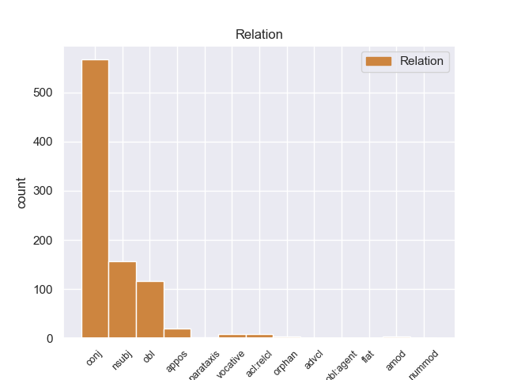
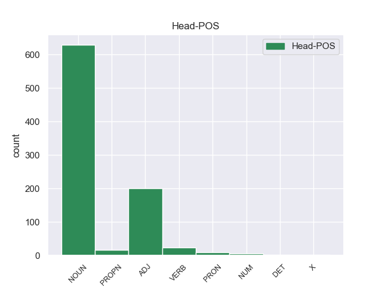
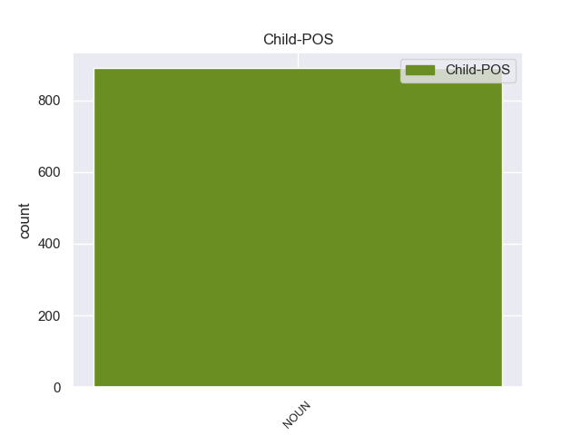

Distribution of features within this leaf



Agreement Rules sorted by frequency.
- When the dependent token is the conjunct(conj) of the head token, and the dependent token is NOUN.
1 Θα _ _ _ _ 0 _ _ _
2 ήθελα _ _ _ _ 0 _ _ _
3 να _ _ _ _ 0 _ _ _
4 επιστήσω _ _ _ _ 0 _ _ _
5 την _ _ _ _ 0 _ _ _
6 προσοχή _ _ _ _ 0 _ _ _
7 όλων _ _ _ _ 0 _ _ _
8 των _ _ _ _ 0 _ _ _
9 συναδέλφων _ _ _ _ 0 _ _ _
10 σ _ _ _ _ 0 _ _ _
11 το _ _ _ _ 0 _ _ _
12 γεγονός _ _ _ _ 0 _ _ _
13 ότι _ _ _ _ 0 _ _ _
14 , _ _ _ _ 0 _ _ _
15 εάν _ _ _ _ 0 _ _ _
16 υπάρχουν _ _ _ _ 0 _ _ _
17 κάποιες _ _ _ _ 0 _ _ _
18 ελευθερίες _ _ _ _ 0 _ _ _
19 οι _ _ _ _ 0 _ _ _
20 οποίες _ _ _ _ 0 _ _ _
21 είναι _ _ _ _ 0 _ _ _
22 ζωτικής _ _ _ _ 0 _ _ _
23 σημασίας _ _ _ _ 0 _ _ _
24 για _ _ _ _ 0 _ _ _
25 την _ _ _ _ 0 _ _ _
26 άσκηση _ _ _ _ 0 _ _ _
27 του _ _ _ _ 0 _ _ _
28 λειτουργήματος _ _ _ _ 0 _ _ _
29 της _ _ _ _ 0 _ _ _
30 δημόσιας _ _ _ _ 0 _ _ _
31 εκπροσώπησης _ _ _ _ 0 _ _ _
32 , _ _ _ _ 0 _ _ _
33 ιδίως _ _ _ _ 0 _ _ _
34 για _ _ _ _ 0 _ _ _
35 ένα _ _ _ _ 0 _ _ _
36 Κοινοβούλιο _ _ _ _ 0 _ _ _
37 σαν _ _ _ _ 0 _ _ _
38 το _ _ _ _ 0 _ _ _
39 δικό _ _ _ _ 0 _ _ _
40 μας _ _ _ _ 0 _ _ _
41 , _ _ _ _ 0 _ _ _
42 η _ _ _ _ 0 _ _ _
43 ελευθερία _ _ _ _ 0 _ _ _
44 της _ _ _ _ 0 _ _ _
45 επικοινωνίας _ _ _ _ 0 _ _ _
46 με _ _ _ _ 0 _ _ _
47 άλλους _ _ _ _ 0 _ _ _
48 πολίτες πολίτης NOUN _ Case=Acc|Gender=Masc|Number=Plur 0 _ _ _
49 και _ _ _ _ 0 _ _ _
50 με _ _ _ _ 0 _ _ _
51 τους _ _ _ _ 0 _ _ _
52 πολίτες πολίτς NOUN _ Case=Acc|Gender=Masc|Number=Plur 48 conj _ _
53 τρίτων _ _ _ _ 0 _ _ _
54 χωρών _ _ _ _ 0 _ _ _
55 , _ _ _ _ 0 _ _ _
56 καθώς _ _ _ _ 0 _ _ _
57 και _ _ _ _ 0 _ _ _
58 η _ _ _ _ 0 _ _ _
59 ελευθερία _ _ _ _ 0 _ _ _
60 μετακίνησης _ _ _ _ 0 _ _ _
61 , _ _ _ _ 0 _ _ _
62 είναι _ _ _ _ 0 _ _ _
63 κρίσιμες _ _ _ _ 0 _ _ _
64 για _ _ _ _ 0 _ _ _
65 τη _ _ _ _ 0 _ _ _
66 διεκπεραίωση _ _ _ _ 0 _ _ _
67 του _ _ _ _ 0 _ _ _
68 έργου _ _ _ _ 0 _ _ _
69 μας _ _ _ _ 0 _ _ _
70 . _ _ _ _ 0 _ _ _
1 Θα _ _ _ _ 0 _ _ _
2 ήθελα _ _ _ _ 0 _ _ _
3 να _ _ _ _ 0 _ _ _
4 επιστήσω _ _ _ _ 0 _ _ _
5 την _ _ _ _ 0 _ _ _
6 προσοχή _ _ _ _ 0 _ _ _
7 όλων _ _ _ _ 0 _ _ _
8 των _ _ _ _ 0 _ _ _
9 συναδέλφων _ _ _ _ 0 _ _ _
10 σ _ _ _ _ 0 _ _ _
11 το _ _ _ _ 0 _ _ _
12 γεγονός _ _ _ _ 0 _ _ _
13 ότι _ _ _ _ 0 _ _ _
14 , _ _ _ _ 0 _ _ _
15 εάν _ _ _ _ 0 _ _ _
16 υπάρχουν _ _ _ _ 0 _ _ _
17 κάποιες _ _ _ _ 0 _ _ _
18 ελευθερίες _ _ _ _ 0 _ _ _
19 οι _ _ _ _ 0 _ _ _
20 οποίες _ _ _ _ 0 _ _ _
21 είναι _ _ _ _ 0 _ _ _
22 ζωτικής _ _ _ _ 0 _ _ _
23 σημασίας _ _ _ _ 0 _ _ _
24 για _ _ _ _ 0 _ _ _
25 την _ _ _ _ 0 _ _ _
26 άσκηση _ _ _ _ 0 _ _ _
27 του _ _ _ _ 0 _ _ _
28 λειτουργήματος _ _ _ _ 0 _ _ _
29 της _ _ _ _ 0 _ _ _
30 δημόσιας _ _ _ _ 0 _ _ _
31 εκπροσώπησης _ _ _ _ 0 _ _ _
32 , _ _ _ _ 0 _ _ _
33 ιδίως _ _ _ _ 0 _ _ _
34 για _ _ _ _ 0 _ _ _
35 ένα _ _ _ _ 0 _ _ _
36 Κοινοβούλιο _ _ _ _ 0 _ _ _
37 σαν _ _ _ _ 0 _ _ _
38 το _ _ _ _ 0 _ _ _
39 δικό _ _ _ _ 0 _ _ _
40 μας _ _ _ _ 0 _ _ _
41 , _ _ _ _ 0 _ _ _
42 η _ _ _ _ 0 _ _ _
43 ελευθερία _ _ _ _ 0 _ _ _
44 της _ _ _ _ 0 _ _ _
45 επικοινωνίας _ _ _ _ 0 _ _ _
46 με _ _ _ _ 0 _ _ _
47 άλλους _ _ _ _ 0 _ _ _
48 πολίτες _ _ _ _ 0 _ _ _
49 και _ _ _ _ 0 _ _ _
50 με _ _ _ _ 0 _ _ _
51 τους _ _ _ _ 0 _ _ _
52 πολίτες _ _ _ _ 0 _ _ _
53 τρίτων _ _ _ _ 0 _ _ _
54 χωρών _ _ _ _ 0 _ _ _
55 , _ _ _ _ 0 _ _ _
56 καθώς _ _ _ _ 0 _ _ _
57 και _ _ _ _ 0 _ _ _
58 η _ _ _ _ 0 _ _ _
59 ελευθερία ελευθερία NOUN _ Case=Nom|Gender=Fem|Number=Sing 63 nsubj _ _
60 μετακίνησης _ _ _ _ 0 _ _ _
61 , _ _ _ _ 0 _ _ _
62 είναι _ _ _ _ 0 _ _ _
63 κρίσιμες κρίσιμος ADJ _ Case=Nom|Gender=Fem|Number=Plur 0 _ _ _
64 για _ _ _ _ 0 _ _ _
65 τη _ _ _ _ 0 _ _ _
66 διεκπεραίωση _ _ _ _ 0 _ _ _
67 του _ _ _ _ 0 _ _ _
68 έργου _ _ _ _ 0 _ _ _
69 μας _ _ _ _ 0 _ _ _
70 . _ _ _ _ 0 _ _ _
1 Αυτό _ _ _ _ 0 _ _ _
2 μπορεί _ _ _ _ 0 _ _ _
3 να _ _ _ _ 0 _ _ _
4 μην _ _ _ _ 0 _ _ _
5 οδηγήσει _ _ _ _ 0 _ _ _
6 σ _ _ _ _ 0 _ _ _
7 τη _ _ _ _ 0 _ _ _
8 λήξη _ _ _ _ 0 _ _ _
9 του _ _ _ _ 0 _ _ _
10 εν _ _ _ _ 0 _ _ _
11 λόγω _ _ _ _ 0 _ _ _
12 ζητήματος _ _ _ _ 0 _ _ _
13 αλλά _ _ _ _ 0 _ _ _
14 , _ _ _ _ 0 _ _ _
15 σ _ _ _ _ 0 _ _ _
16 τη _ _ _ _ 0 _ _ _
17 μορφή _ _ _ _ 0 _ _ _
18 υπό _ _ _ _ 0 _ _ _
19 την _ _ _ _ 0 _ _ _
20 οποία _ _ _ _ 0 _ _ _
21 την _ _ _ _ 0 _ _ _
22 λάβαμε _ _ _ _ 0 _ _ _
23 , _ _ _ _ 0 _ _ _
24 αυτή _ _ _ _ 0 _ _ _
25 η _ _ _ _ 0 _ _ _
26 αίτηση _ _ _ _ 0 _ _ _
27 άρσης _ _ _ _ 0 _ _ _
28 της _ _ _ _ 0 _ _ _
29 ασυλίας _ _ _ _ 0 _ _ _
30 ήταν _ _ _ _ 0 _ _ _
31 , _ _ _ _ 0 _ _ _
32 κατά _ _ _ _ 0 _ _ _
33 την _ _ _ _ 0 _ _ _
34 άποψη άποψη NOUN _ Case=Acc|Gender=Fem|Number=Sing 40 obl _ _
35 της _ _ _ _ 0 _ _ _
36 Επιτροπής _ _ _ _ 0 _ _ _
37 Νομικών _ _ _ _ 0 _ _ _
38 Θεμάτων _ _ _ _ 0 _ _ _
39 , _ _ _ _ 0 _ _ _
40 απαράδεκτη απαράδεκτος ADJ _ Case=Nom|Gender=Fem|Number=Sing 0 _ _ _
41 , _ _ _ _ 0 _ _ _
42 άποψη _ _ _ _ 0 _ _ _
43 την _ _ _ _ 0 _ _ _
44 οποία _ _ _ _ 0 _ _ _
45 συνιστώ _ _ _ _ 0 _ _ _
46 σ _ _ _ _ 0 _ _ _
47 το _ _ _ _ 0 _ _ _
48 Σώμα _ _ _ _ 0 _ _ _
49 να _ _ _ _ 0 _ _ _
50 υιοθετήσει _ _ _ _ 0 _ _ _
51 . _ _ _ _ 0 _ _ _
1 Σ _ _ _ _ 0 _ _ _
2 τα _ _ _ _ 0 _ _ _
3 τείχη _ _ _ _ 0 _ _ _
4 του _ _ _ _ 0 _ _ _
5 Νέου _ _ _ _ 0 _ _ _
6 Φρουρίου _ _ _ _ 0 _ _ _
7 , _ _ _ _ 0 _ _ _
8 σ _ _ _ _ 0 _ _ _
9 τα _ _ _ _ 0 _ _ _
10 δυτικά _ _ _ _ 0 _ _ _
11 , _ _ _ _ 0 _ _ _
12 υπάρχει _ _ _ _ 0 _ _ _
13 αποτυπωμένο _ _ _ _ 0 _ _ _
14 το _ _ _ _ 0 _ _ _
15 έμβλημα έμβλημα NOUN _ Case=Nom|Gender=Neut|Number=Sing 0 _ _ _
16 της _ _ _ _ 0 _ _ _
17 Γαληνότατης _ _ _ _ 0 _ _ _
18 Δημοκρατίας _ _ _ _ 0 _ _ _
19 της _ _ _ _ 0 _ _ _
20 Βενετίας _ _ _ _ 0 _ _ _
21 , _ _ _ _ 0 _ _ _
22 το _ _ _ _ 0 _ _ _
23 λιοντάρι λιοντάρι NOUN _ Case=Nom|Gender=Neut|Number=Sing 15 appos _ _
24 του _ _ _ _ 0 _ _ _
25 Αγίου _ _ _ _ 0 _ _ _
26 Μάρκου _ _ _ _ 0 _ _ _
27 . _ _ _ _ 0 _ _ _
1 Επιτυχία _ _ _ _ 0 _ _ _
2 επίσης _ _ _ _ 0 _ _ _
3 του _ _ _ _ 0 _ _ _
4 Επιτρόπου επιτρός NOUN _ Case=Gen|Gender=Masc|Number=Sing 0 _ _ _
5 Pedro _ _ _ _ 0 _ _ _
6 Solbes _ _ _ _ 0 _ _ _
7 , _ _ _ _ 0 _ _ _
8 ο _ _ _ _ 0 _ _ _
9 οποίος _ _ _ _ 0 _ _ _
10 ήταν _ _ _ _ 0 _ _ _
11 Υπουργός υπουργός NOUN _ Case=Nom|Gender=Masc|Number=Sing 4 acl:relcl _ _
12 Οικονομικών _ _ _ _ 0 _ _ _
13 της _ _ _ _ 0 _ _ _
14 ισπανικής _ _ _ _ 0 _ _ _
15 κυβέρνησης _ _ _ _ 0 _ _ _
16 τον _ _ _ _ 0 _ _ _
17 Δεκέμβριο_του_1995 _ _ _ _ 0 _ _ _
18 . _ _ _ _ 0 _ _ _
1 Αξιότιμε _ _ _ _ 0 _ _ _
2 κύριε _ _ _ _ 0 _ _ _
3 Πρόεδρε _ _ _ _ 0 _ _ _
4 , _ _ _ _ 0 _ _ _
5 κυρία κυρία NOUN NOUN Case=Voc|Gender=Fem|Number=Sing 6 vocative _ _
6 Επίτροπε επίτροπος NOUN NOUN Case=Voc|Gender=Fem|Number=Sing 0 _ _ _
7 , _ _ _ _ 0 _ _ _
8 αξιότιμοι _ _ _ _ 0 _ _ _
9 συνάδελφοι _ _ _ _ 0 _ _ _
10 , _ _ _ _ 0 _ _ _
11 η _ _ _ _ 0 _ _ _
12 ελευθέρωση _ _ _ _ 0 _ _ _
13 των _ _ _ _ 0 _ _ _
14 οδικών _ _ _ _ 0 _ _ _
15 μεταφορών _ _ _ _ 0 _ _ _
16 αναμφίβολα _ _ _ _ 0 _ _ _
17 οδήγησε _ _ _ _ 0 _ _ _
18 σ _ _ _ _ 0 _ _ _
19 το _ _ _ _ 0 _ _ _
20 να _ _ _ _ 0 _ _ _
21 έχουμε _ _ _ _ 0 _ _ _
22 σ _ _ _ _ 0 _ _ _
23 την _ _ _ _ 0 _ _ _
24 Ευρώπη _ _ _ _ 0 _ _ _
25 καλύτερη _ _ _ _ 0 _ _ _
26 προσφορά _ _ _ _ 0 _ _ _
27 και _ _ _ _ 0 _ _ _
28 καλύτερες _ _ _ _ 0 _ _ _
29 τιμές _ _ _ _ 0 _ _ _
30 . _ _ _ _ 0 _ _ _
1 Αλγερία Αλγερία PROPN _ Case=Nom|Gender=Fem|Number=Sing 0 _ _ _
2 : _ _ _ _ 0 _ _ _
3 Απαγωγές αόφαση NOUN _ Case=Nom|Gender=Fem|Number=Plur 1 parataxis _ _
4 ξένων _ _ _ _ 0 _ _ _
5 πολιτών _ _ _ _ 0 _ _ _
6 απ' _ _ _ _ 0 _ _ _
7 την _ _ _ _ 0 _ _ _
8 Αλ _ _ _ _ 0 _ _ _
9 Κάιντα _ _ _ _ 0 _ _ _
10 . _ _ _ _ 0 _ _ _
1 Η _ _ _ _ 0 _ _ _
2 πρώτη _ _ _ _ 0 _ _ _
3 ειδοποίηση _ _ _ _ 0 _ _ _
4 θα _ _ _ _ 0 _ _ _
5 γίνεται _ _ _ _ 0 _ _ _
6 με _ _ _ _ 0 _ _ _
7 την _ _ _ _ 0 _ _ _
8 παρέλευση _ _ _ _ 0 _ _ _
9 πέντε _ _ _ _ 0 _ _ _
10 χρόνων _ _ _ _ 0 _ _ _
11 από _ _ _ _ 0 _ _ _
12 την _ _ _ _ 0 _ _ _
13 ημερομηνία _ _ _ _ 0 _ _ _
14 που _ _ _ _ 0 _ _ _
15 ανοίχθηκε _ _ _ _ 0 _ _ _
16 ο _ _ _ _ 0 _ _ _
17 λογαριασμός _ _ _ _ 0 _ _ _
18 , _ _ _ _ 0 _ _ _
19 η _ _ _ _ 0 _ _ _
20 δεύτερη _ _ _ _ 0 _ _ _
21 σ _ _ _ _ 0 _ _ _
22 την _ _ _ _ 0 _ _ _
23 10ετία _ _ _ _ 0 _ _ _
24 και _ _ _ _ 0 _ _ _
25 η _ _ _ _ 0 _ _ _
26 τρίτη τρίτος NUM NUM Case=Nom|Gender=Fem|Number=Sing|NumType=Ord 0 _ _ _
27 σ _ _ _ _ 0 _ _ _
28 την _ _ _ _ 0 _ _ _
29 15ετία 15ετία NOUN NOUN Case=Acc|Gender=Fem|Number=Sing 26 orphan _ SpaceAfter=No
30 . _ _ _ _ 0 _ _ _
1 Μία _ _ _ _ 0 _ _ _
2 τελευταία _ _ _ _ 0 _ _ _
3 , _ _ _ _ 0 _ _ _
4 αλλά _ _ _ _ 0 _ _ _
5 σημαντική _ _ _ _ 0 _ _ _
6 παρατήρηση _ _ _ _ 0 _ _ _
7 , _ _ _ _ 0 _ _ _
8 γιατί _ _ _ _ 0 _ _ _
9 τόσο _ _ _ _ 0 _ _ _
10 εσείς _ _ _ _ 0 _ _ _
11 , _ _ _ _ 0 _ _ _
12 κύριε κύριος NOUN _ Case=Voc|Gender=Masc|Number=Plur 13 amod _ _
13 Πρόεδρε πρόεδρος NOUN _ Case=Voc|Gender=Masc|Number=Sing 0 _ _ _
14 , _ _ _ _ 0 _ _ _
15 όσο _ _ _ _ 0 _ _ _
16 και _ _ _ _ 0 _ _ _
17 ο _ _ _ _ 0 _ _ _
18 κ. _ _ _ _ 0 _ _ _
19 Poettering _ _ _ _ 0 _ _ _
20 αναφερθήκατε _ _ _ _ 0 _ _ _
21 σε _ _ _ _ 0 _ _ _
22 αυτό _ _ _ _ 0 _ _ _
23 με _ _ _ _ 0 _ _ _
24 διαφορετικούς _ _ _ _ 0 _ _ _
25 τρόπους _ _ _ _ 0 _ _ _
26 . _ _ _ _ 0 _ _ _
1 Προτάθηκαν _ _ _ _ 0 _ _ _
2 για _ _ _ _ 0 _ _ _
3 τη _ _ _ _ 0 _ _ _
4 θέση _ _ _ _ 0 _ _ _
5 του _ _ _ _ 0 _ _ _
6 Γενικού _ _ _ _ 0 _ _ _
7 Διοικητή _ _ _ _ 0 _ _ _
8 του _ _ _ _ 0 _ _ _
9 νησιού _ _ _ _ 0 _ _ _
10 οι _ _ _ _ 0 _ _ _
11 Δροζ _ _ _ _ 0 _ _ _
12 , _ _ _ _ 0 _ _ _
13 Σέφερ _ _ _ _ 0 _ _ _
14 , _ _ _ _ 0 _ _ _
15 ο _ _ _ _ 0 _ _ _
16 Μαυροβούνιος _ _ _ _ 0 _ _ _
17 Πέτροβιτς _ _ _ _ 0 _ _ _
18 Μπόζα _ _ _ _ 0 _ _ _
19 , _ _ _ _ 0 _ _ _
20 ο _ _ _ _ 0 _ _ _
21 πρίγκιπας _ _ _ _ 0 _ _ _
22 Βάττεμβεργ _ _ _ _ 0 _ _ _
23 ενώ _ _ _ _ 0 _ _ _
24 οι _ _ _ _ 0 _ _ _
25 Τούρκοι _ _ _ _ 0 _ _ _
26 ήθελαν _ _ _ _ 0 _ _ _
27 γι' _ _ _ _ 0 _ _ _
28 αυτή _ _ _ _ 0 _ _ _
29 τη _ _ _ _ 0 _ _ _
30 θέση _ _ _ _ 0 _ _ _
31 τον _ _ _ _ 0 _ _ _
32 Ανθόπουλο Ανθόπουλος PROPN PROPN Case=Acc|Gender=Masc|Number=Sing 0 _ _ _
33 πασά πασάς NOUN NOUN Case=Acc|Gender=Masc|Number=Sing 32 flat _ SpaceAfter=No
34 . _ _ _ _ 0 _ _ _
Disagree Examples:
1 Πράγματι _ _ _ _ 0 _ _ _
2 , _ _ _ _ 0 _ _ _
3 η _ _ _ _ 0 _ _ _
4 Σύμβαση _ _ _ _ 0 _ _ _
5 του _ _ _ _ 0 _ _ _
6 1991 _ _ _ _ 0 _ _ _
7 σχετικά _ _ _ _ 0 _ _ _
8 με _ _ _ _ 0 _ _ _
9 την _ _ _ _ 0 _ _ _
10 εκτέλεση _ _ _ _ 0 _ _ _
11 αλλοδαπών _ _ _ _ 0 _ _ _
12 αποφάσεων _ _ _ _ 0 _ _ _
13 σε _ _ _ _ 0 _ _ _
14 ποινικές _ _ _ _ 0 _ _ _
15 υποθέσεις _ _ _ _ 0 _ _ _
16 - _ _ _ _ 0 _ _ _
17 η _ _ _ _ 0 _ _ _
18 οποία _ _ _ _ 0 _ _ _
19 διαφορετικά _ _ _ _ 0 _ _ _
20 θα _ _ _ _ 0 _ _ _
21 ήταν _ _ _ _ 0 _ _ _
22 σχετική σχετικός ADJ ADJ Case=Nom|Gender=Fem|Number=Sing 0 _ _ _
23 με _ _ _ _ 0 _ _ _
24 το _ _ _ _ 0 _ _ _
25 θέμα θέμα NOUN NOUN Case=Acc|Gender=Neut|Number=Sing 22 obl _ _
26 μας _ _ _ _ 0 _ _ _
27 - _ _ _ _ 0 _ _ _
28 δεν _ _ _ _ 0 _ _ _
29 έχει _ _ _ _ 0 _ _ _
30 τεθεί _ _ _ _ 0 _ _ _
31 ακόμα _ _ _ _ 0 _ _ _
32 σε _ _ _ _ 0 _ _ _
33 ισχύ _ _ _ _ 0 _ _ _
34 , _ _ _ _ 0 _ _ _
35 δέκα _ _ _ _ 0 _ _ _
36 χρόνια _ _ _ _ 0 _ _ _
37 ύστερα _ _ _ _ 0 _ _ _
38 από _ _ _ _ 0 _ _ _
39 την _ _ _ _ 0 _ _ _
40 υπογραφή _ _ _ _ 0 _ _ _
41 της _ _ _ _ 0 _ _ _
42 . _ _ _ _ 0 _ _ _
1 Η _ _ _ _ 0 _ _ _
2 μία _ _ _ _ 0 _ _ _
3 , _ _ _ _ 0 _ _ _
4 σχετικά _ _ _ _ 0 _ _ _
5 με _ _ _ _ 0 _ _ _
6 το _ _ _ _ 0 _ _ _
7 ευρωπαϊκό _ _ _ _ 0 _ _ _
8 ένταλμα ένταλμα NOUN NOUN Case=Acc|Gender=Neut|Number=Sing 0 _ _ _
9 σύλληψης _ _ _ _ 0 _ _ _
10 και _ _ _ _ 0 _ _ _
11 τις _ _ _ _ 0 _ _ _
12 διαδικασίες διαδικασία NOUN NOUN Case=Acc|Gender=Fem|Number=Plur 8 conj _ _
13 παράδοσης _ _ _ _ 0 _ _ _
14 μεταξύ _ _ _ _ 0 _ _ _
15 των _ _ _ _ 0 _ _ _
16 κρατών _ _ _ _ 0 _ _ _
17 μελών _ _ _ _ 0 _ _ _
18 και _ _ _ _ 0 _ _ _
19 η _ _ _ _ 0 _ _ _
20 άλλη _ _ _ _ 0 _ _ _
21 σχετικά _ _ _ _ 0 _ _ _
22 με _ _ _ _ 0 _ _ _
23 τον _ _ _ _ 0 _ _ _
24 κοινό _ _ _ _ 0 _ _ _
25 ορισμό _ _ _ _ 0 _ _ _
26 της _ _ _ _ 0 _ _ _
27 τρομοκρατίας _ _ _ _ 0 _ _ _
28 . _ _ _ _ 0 _ _ _
1 Και _ _ _ _ 0 _ _ _
2 θα _ _ _ _ 0 _ _ _
3 το _ _ _ _ 0 _ _ _
4 κάνουμε _ _ _ _ 0 _ _ _
5 για _ _ _ _ 0 _ _ _
6 τους _ _ _ _ 0 _ _ _
7 λόγους _ _ _ _ 0 _ _ _
8 που _ _ _ _ 0 _ _ _
9 εξηγήσαμε _ _ _ _ 0 _ _ _
10 , _ _ _ _ 0 _ _ _
11 αλλά _ _ _ _ 0 _ _ _
12 θέλω _ _ _ _ 0 _ _ _
13 , _ _ _ _ 0 _ _ _
14 κυρίες κυρία NOUN NOUN Case=Voc|Gender=Fem|Number=Plur 0 _ _ _
15 και _ _ _ _ 0 _ _ _
16 κύριοι κύριος NOUN NOUN Case=Voc|Gender=Masc|Number=Plur 14 conj _ SpaceAfter=No
17 , _ _ _ _ 0 _ _ _
18 να _ _ _ _ 0 _ _ _
19 σας _ _ _ _ 0 _ _ _
20 πω _ _ _ _ 0 _ _ _
21 εδώ _ _ _ _ 0 _ _ _
22 για _ _ _ _ 0 _ _ _
23 ποιο _ _ _ _ 0 _ _ _
24 λόγο _ _ _ _ 0 _ _ _
25 πρόκειται _ _ _ _ 0 _ _ _
26 να _ _ _ _ 0 _ _ _
27 καταψηφίσουμε _ _ _ _ 0 _ _ _
28 τις _ _ _ _ 0 _ _ _
29 τροπολογίες _ _ _ _ 0 _ _ _
30 που _ _ _ _ 0 _ _ _
31 παρουσιάστηκαν _ _ _ _ 0 _ _ _
32 . _ _ _ _ 0 _ _ _
1 Αλλά _ _ _ _ 0 _ _ _
2 , _ _ _ _ 0 _ _ _
3 από _ _ _ _ 0 _ _ _
4 την _ _ _ _ 0 _ _ _
5 άλλη _ _ _ _ 0 _ _ _
6 πλευρά _ _ _ _ 0 _ _ _
7 , _ _ _ _ 0 _ _ _
8 έχω _ _ _ _ 0 _ _ _
9 τον _ _ _ _ 0 _ _ _
10 μεγαλύτερο _ _ _ _ 0 _ _ _
11 σεβασμό _ _ _ _ 0 _ _ _
12 για _ _ _ _ 0 _ _ _
13 το _ _ _ _ 0 _ _ _
14 δημοκρατικό _ _ _ _ 0 _ _ _
15 μας _ _ _ _ 0 _ _ _
16 σύστημα σύστημα NOUN NOUN Case=Acc|Gender=Neut|Number=Sing 0 _ _ _
17 και _ _ _ _ 0 _ _ _
18 τη _ _ _ _ 0 _ _ _
19 δικαιοσύνη δικαιοσύνη NOUN NOUN Case=Acc|Gender=Fem|Number=Sing 16 conj _ _
20 και _ _ _ _ 0 _ _ _
21 πιστεύω _ _ _ _ 0 _ _ _
22 επίσης _ _ _ _ 0 _ _ _
23 ότι _ _ _ _ 0 _ _ _
24 είναι _ _ _ _ 0 _ _ _
25 υποχρέωση _ _ _ _ 0 _ _ _
26 του _ _ _ _ 0 _ _ _
27 Κοινοβουλίου _ _ _ _ 0 _ _ _
28 να _ _ _ _ 0 _ _ _
29 τα _ _ _ _ 0 _ _ _
30 υπερασπιστούμε _ _ _ _ 0 _ _ _
31 με _ _ _ _ 0 _ _ _
32 τον _ _ _ _ 0 _ _ _
33 ίδιο _ _ _ _ 0 _ _ _
34 ενθουσιασμό _ _ _ _ 0 _ _ _
35 . _ _ _ _ 0 _ _ _
1 Κύριε _ _ _ _ 0 _ _ _
2 Πρόεδρε _ _ _ _ 0 _ _ _
3 , _ _ _ _ 0 _ _ _
4 κατά _ _ _ _ 0 _ _ _
5 τη _ _ _ _ 0 _ _ _
6 διάρκεια _ _ _ _ 0 _ _ _
7 των _ _ _ _ 0 _ _ _
8 τελευταίων _ _ _ _ 0 _ _ _
9 εβδομάδων _ _ _ _ 0 _ _ _
10 επεξεργασθήκαμε _ _ _ _ 0 _ _ _
11 ορισμένα _ _ _ _ 0 _ _ _
12 ζητήματα _ _ _ _ 0 _ _ _
13 , _ _ _ _ 0 _ _ _
14 τα _ _ _ _ 0 _ _ _
15 οποία _ _ _ _ 0 _ _ _
16 σχετίζονται _ _ _ _ 0 _ _ _
17 άμεσα _ _ _ _ 0 _ _ _
18 με _ _ _ _ 0 _ _ _
19 τον _ _ _ _ 0 _ _ _
20 κλάδο _ _ _ _ 0 _ _ _
21 των _ _ _ _ 0 _ _ _
22 μεταφορών _ _ _ _ 0 _ _ _
23 - _ _ _ _ 0 _ _ _
24 ακόμα _ _ _ _ 0 _ _ _
25 και _ _ _ _ 0 _ _ _
26 τα _ _ _ _ 0 _ _ _
27 κοινωνικά _ _ _ _ 0 _ _ _
28 μέτρα _ _ _ _ 0 _ _ _
29 - _ _ _ _ 0 _ _ _
30 ενώ _ _ _ _ 0 _ _ _
31 και _ _ _ _ 0 _ _ _
32 σ _ _ _ _ 0 _ _ _
33 την _ _ _ _ 0 _ _ _
34 Επιτροπή _ _ _ _ 0 _ _ _
35 Περιφερειακής _ _ _ _ 0 _ _ _
36 Πολιτικής πολιτική NOUN NOUN Case=Gen|Gender=Fem|Number=Sing 0 _ _ _
37 , _ _ _ _ 0 _ _ _
38 Μεταφορών _ _ _ _ 0 _ _ _
39 και _ _ _ _ 0 _ _ _
40 Τουρισμού τουρισμός NOUN NOUN Case=Gen|Gender=Masc|Number=Sing 36 conj _ _
41 εκφράσαμε _ _ _ _ 0 _ _ _
42 την _ _ _ _ 0 _ _ _
43 άποψη _ _ _ _ 0 _ _ _
44 ότι _ _ _ _ 0 _ _ _
45 όλα _ _ _ _ 0 _ _ _
46 αυτά _ _ _ _ 0 _ _ _
47 τα _ _ _ _ 0 _ _ _
48 μέτρα _ _ _ _ 0 _ _ _
49 - _ _ _ _ 0 _ _ _
50 πιστεύω _ _ _ _ 0 _ _ _
51 μάλιστα _ _ _ _ 0 _ _ _
52 ότι _ _ _ _ 0 _ _ _
53 ο _ _ _ _ 0 _ _ _
54 χρόνος _ _ _ _ 0 _ _ _
55 εργασίας _ _ _ _ 0 _ _ _
56 ο _ _ _ _ 0 _ _ _
57 οποίος _ _ _ _ 0 _ _ _
58 επιτέλους _ _ _ _ 0 _ _ _
59 ρυθμίστηκε _ _ _ _ 0 _ _ _
60 πλέον _ _ _ _ 0 _ _ _
61 είναι _ _ _ _ 0 _ _ _
62 ένα _ _ _ _ 0 _ _ _
63 σημαντικό _ _ _ _ 0 _ _ _
64 κεφάλαιο _ _ _ _ 0 _ _ _
65 , _ _ _ _ 0 _ _ _
66 το _ _ _ _ 0 _ _ _
67 οποίο _ _ _ _ 0 _ _ _
68 ολοκληρώθηκε _ _ _ _ 0 _ _ _
69 - _ _ _ _ 0 _ _ _
70 έχουν _ _ _ _ 0 _ _ _
71 νόημα _ _ _ _ 0 _ _ _
72 μόνο _ _ _ _ 0 _ _ _
73 εάν _ _ _ _ 0 _ _ _
74 υπάρχει _ _ _ _ 0 _ _ _
75 η _ _ _ _ 0 _ _ _
76 ανάλογη _ _ _ _ 0 _ _ _
77 βούληση _ _ _ _ 0 _ _ _
78 από _ _ _ _ 0 _ _ _
79 τα _ _ _ _ 0 _ _ _
80 κράτη _ _ _ _ 0 _ _ _
81 μέλη _ _ _ _ 0 _ _ _
82 , _ _ _ _ 0 _ _ _
83 αφενός _ _ _ _ 0 _ _ _
84 για _ _ _ _ 0 _ _ _
85 την _ _ _ _ 0 _ _ _
86 εντατικοποίηση _ _ _ _ 0 _ _ _
87 των _ _ _ _ 0 _ _ _
88 ελέγχων _ _ _ _ 0 _ _ _
89 και _ _ _ _ 0 _ _ _
90 αφετέρου _ _ _ _ 0 _ _ _
91 για _ _ _ _ 0 _ _ _
92 την _ _ _ _ 0 _ _ _
93 αναπροσαρμογή _ _ _ _ 0 _ _ _
94 των _ _ _ _ 0 _ _ _
95 κυρώσεων _ _ _ _ 0 _ _ _
96 . _ _ _ _ 0 _ _ _